Renamed after these shots. Every screenshot here was taken 2026-10-16, when the product was still titled “AI ASSistant” and the checkout vault was AI-Brain. The images are kept exactly as taken (receipts, not ads). Since then the product, the source tree, the vault, the default path and the GitHub repo are all renamed — see JUDGE-BRIEF. Captions below may quote the old names on purpose: they describe what is in the picture.
Shipped in the repo at 00_LIVING_DOCS/receipts/ since 2026-10-16 — the live-drive figures. Most drove the app against a clearly labeled test stand-in CLI (the brief names which ranges); one came from a judge’s real claude binary. Judges: start at 00_LIVING_DOCS/JUDGE-BRIEF.md.
Full re-check gallery, captured live from the running app today.
2026-10-16 → 2026-10-17 · figures captured in batches as the branch grew (per-batch test counts ride the captions; the early-batch stamp below names its build) · Xephyr :100 · real Chromium via CDP · 1280×820
Re-check before capture
Early-batch recheck: 446/446 tests (55 files) at 6cdab5f — the suite kept growing through g64 (589) and g66–g68 (604) · TypeScript clean · production build ✓
Git tree clean · HEAD 6cdab5f == origin/v3 (ls-remote confirmed) · main frozen at 8ab95ef
Every screenshot below is the real running app — no mockups, no mock data
Main views
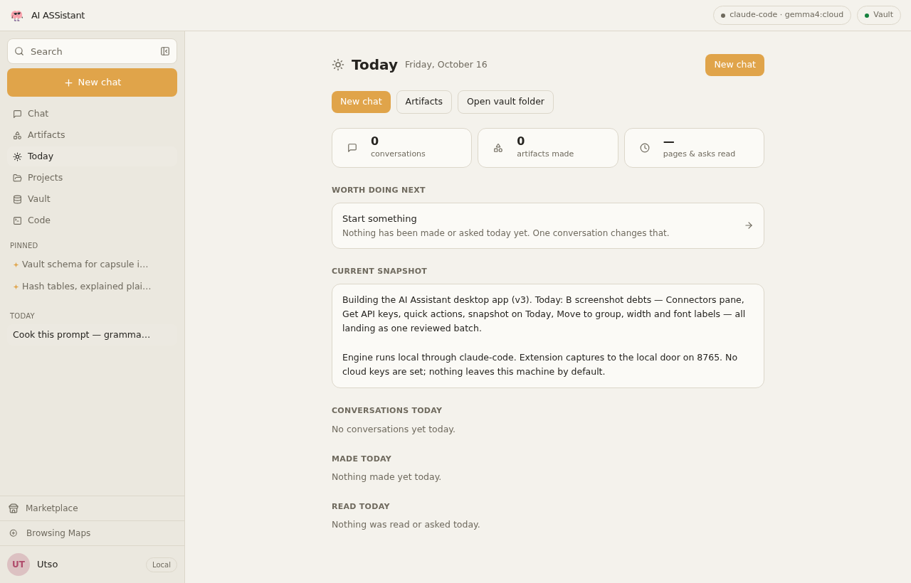
g01 · Today — the handshake. Quick actions (New chat / Artifacts / Open vault folder — every one a real door), the day counted from real records only (0/0/— because nothing happened yet, and it says so), Worth doing next, and the Current Snapshot card reading 04 Working Memory/Current Snapshot.md through the vault's own /today door. The engine's working memory, on the landing screen, honestly sourced.
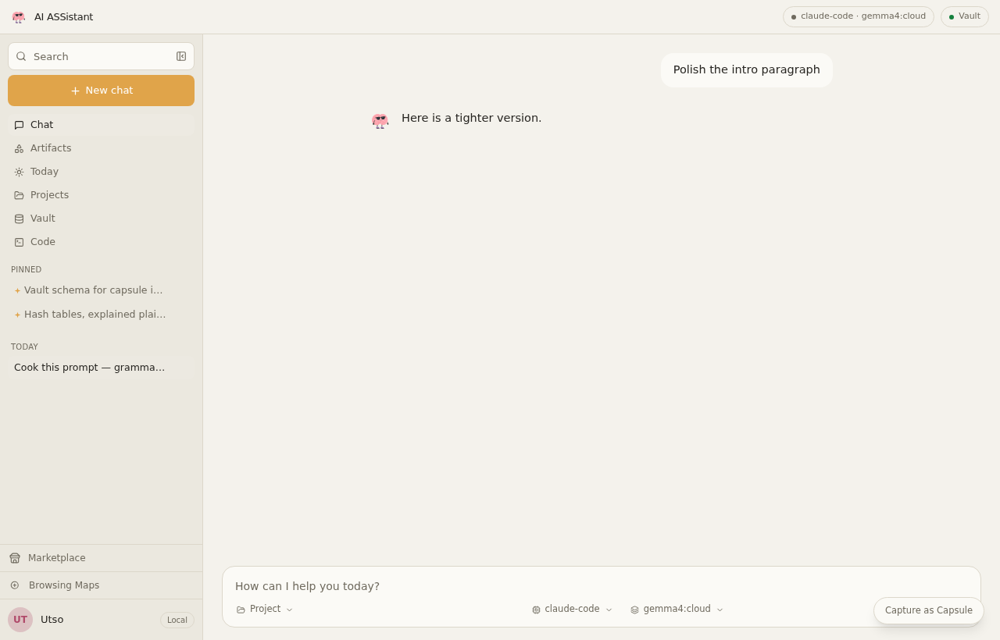
g02 · Chat — one conversation open. The composer's three chips: Project picker, the engine (claude-code), and the model from the engine's own door. "Capture as Capsule" rides the composer. Engine-only send — the app adds nothing of its own.
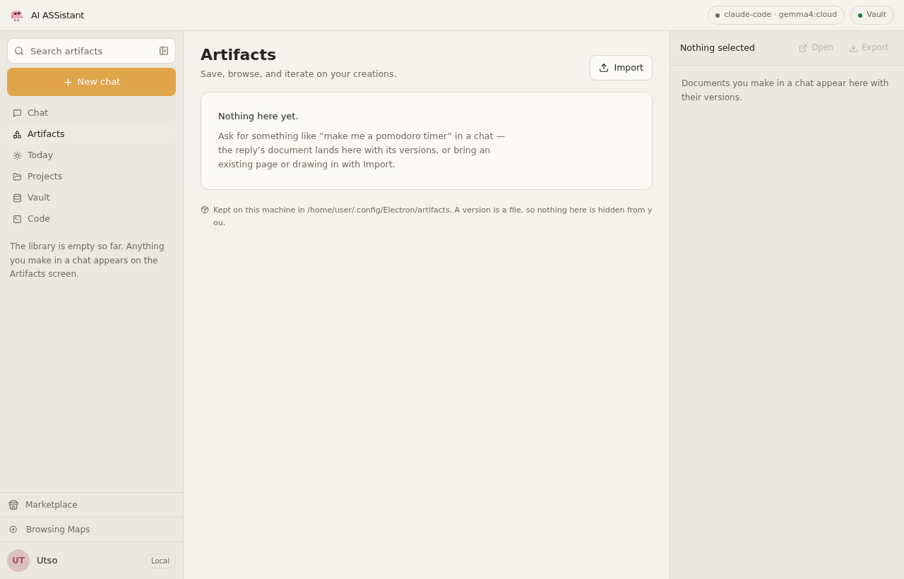
g03 · Artifacts — the library, honestly empty. It says where things live (~/.config/Electron/artifacts, version-is-file), how one gets made, and Import for bringing pages/drawings in. The right pane explains versions instead of pretending one is selected.
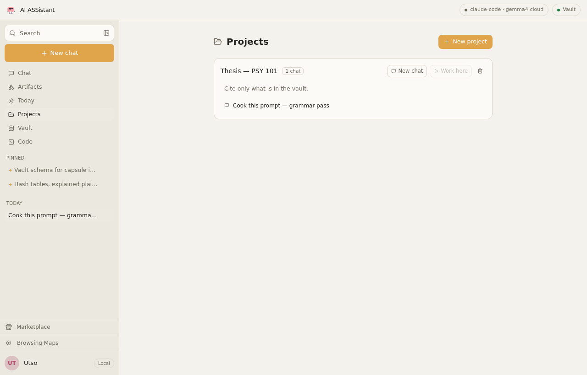
g04 · Projects — the real "Thesis — PSY 101" folder with its instruction line, its 1 chat (counted live), New chat / Work here / delete. Project chats are real folders on disk; nothing invented.
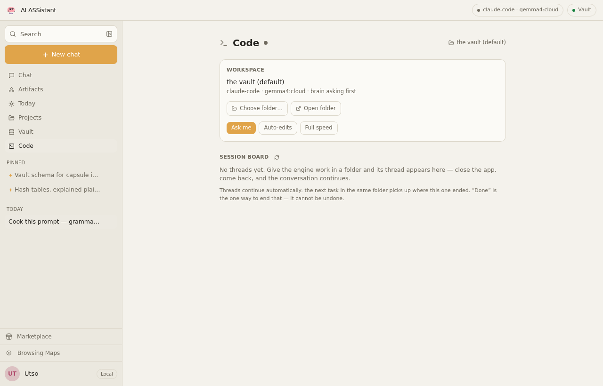
g08 · Code — the workspace card (engine + mode: Ask me / Auto-edits / Full speed, vault as default workspace) over the A.5 session board: "No threads yet" is the honest empty state — threads appear from the engine's real resumable sessions, and "Done" is the one way to end them.
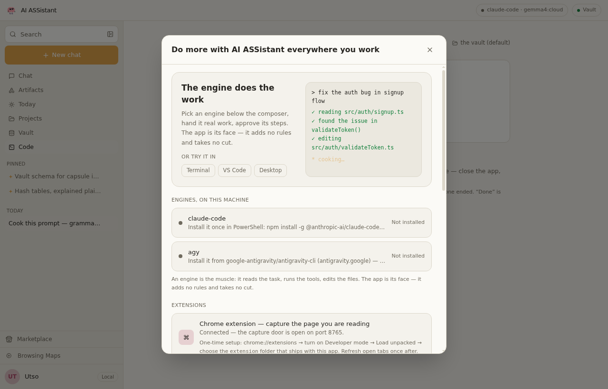
g09 · Marketplace — "Get apps and extensions": engines with honest install lines (claude-code and agy both "Not installed" on this sandbox — the app never invents an engine), the Chrome extension's real door status (Connected, port 8765, one-time setup written out), and the skill catalog with working installs.
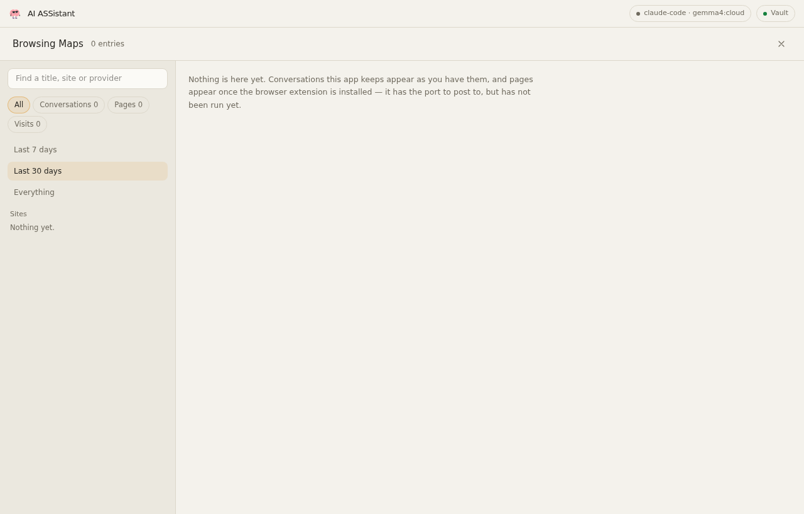
g10 · Browsing Maps — what was read and when, drawn from the vault. Empty and explicit: conversations appear as you have them, pages once the extension runs. Filters (All / Conversations / Pages / Visits, 7/30/all) are real — they filter the same records Today counts.
Vault — the structure and the graph
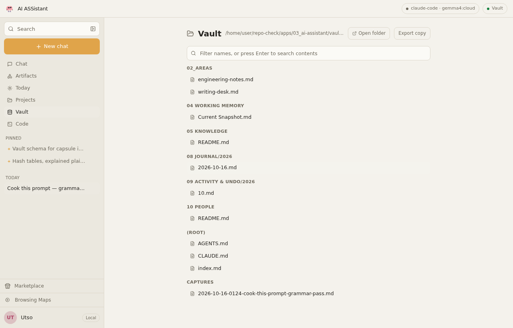
g05 · Vault (file view) — the vault browser over the real AI-Brain folder: 02_Areas, 04 Working Memory (with today's Current Snapshot), 05 Knowledge, Journal, Activity & Undo, 10 People, root rulebooks (AGENTS.md / CLAUDE.md / index.md), Captures. Open folder and Export copy are real doors.g23 · Settings › Vault — the slim pane: Choose folder… / Use default, the structure line ("5 of 5 structure files"), and the 3D connections graph — hand-rolled canvas, no dependencies. The dev vault's real links are sparse (two journal nodes visible); dead and ambiguous links are counted in Structure details, never faked into the picture.
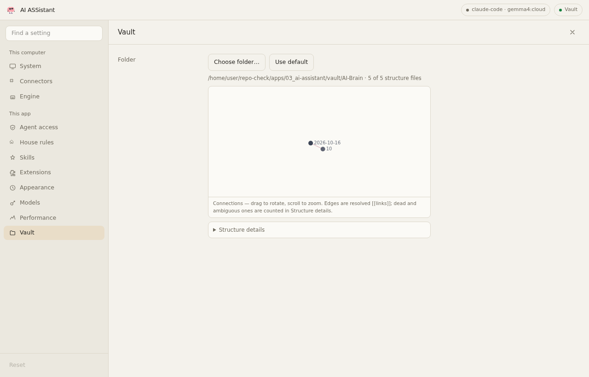
g24 · the graph, rotated — captured after a real mouse drag over the canvas through CDP (pressed → moved → released). Drag to rotate, scroll to zoom; the caption under the graph says exactly what is drawn: resolved [[links]] only.
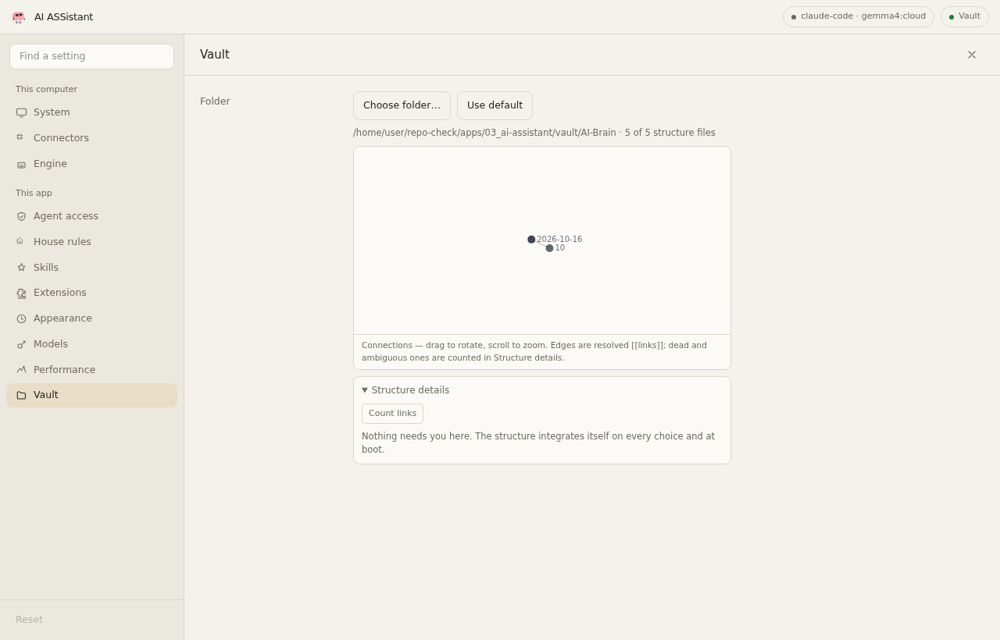
g25 · Structure details open — the compressed details box: Count links, and the quiet state ("Nothing needs you here. The structure integrates itself on every choice and at boot."). Conflicts would self-open this box when a choice produces any.
Overlays & menus
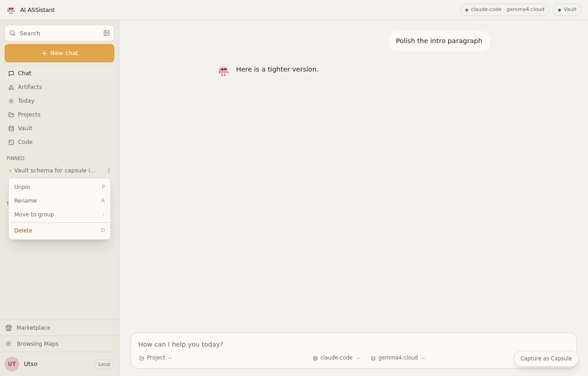
g11 · chat-row menu — Unpin / Rename / Move to group › / Delete, with keyboard hints. The submenu is the real project list (B1's rename, landed this session).
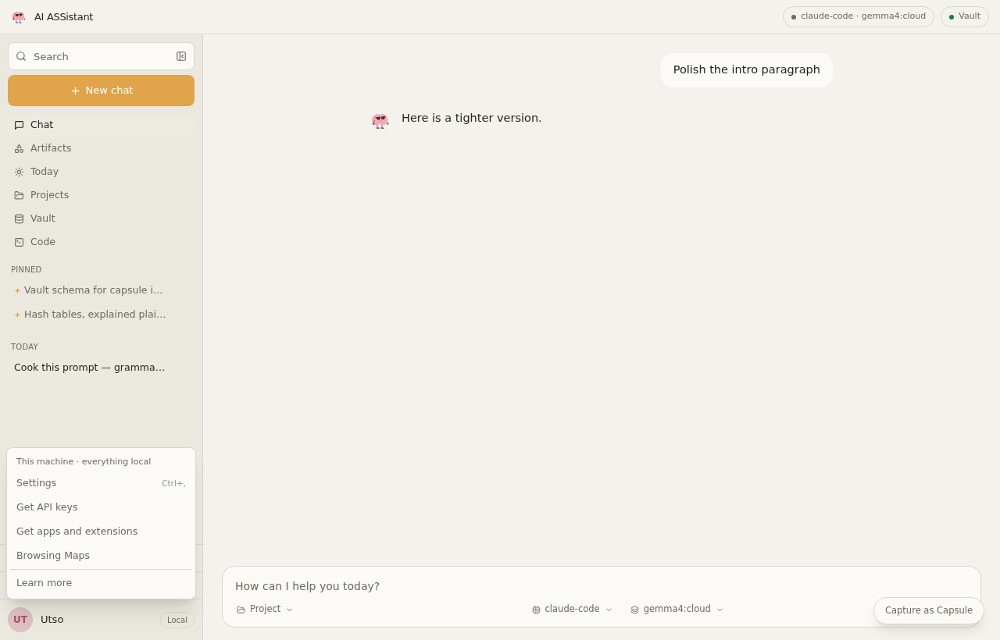
g12 · account menu — "This machine · everything local", Settings (Ctrl+,), Get API keys, Get apps and extensions, Browsing Maps, Learn more. "Get API keys" is the B2 entry added this session; the profile row below is the way in, as the mockup shows.
Settings — all eleven panes
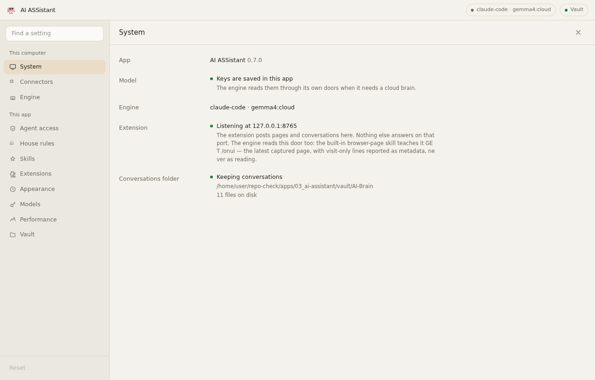
g13 · System — the app's own facts: version, the key-storage rule ("Keys are saved in this app" — read through its doors), the engine, the extension listening at 127.0.0.1:8765 with the onui sentence, and the conversations folder with 11 files counted on disk.
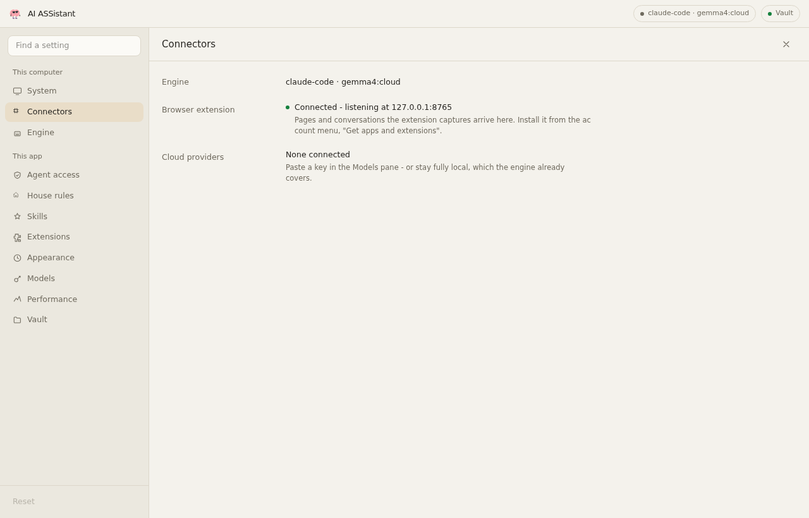
g14 · Connectors — the B4 pane, landed this session: the engine row (live from the engine door), the extension's real listening dot, and cloud providers counted from actual keys ("None connected — …or stay fully local, which the engine already covers"). Real connections only; no invented services.
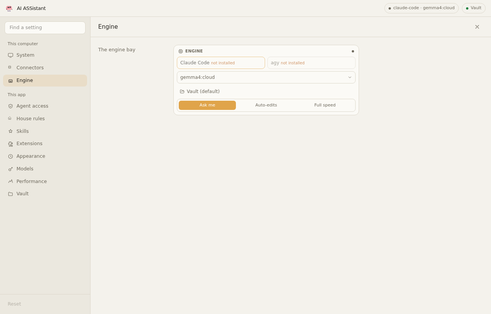
g15 · Engine — the bay: claude-code and agy with honest "not installed" states for this sandbox, the model dropdown (gemma4:cloud from the engine's door), the workspace row, and the three modes with Ask me active.
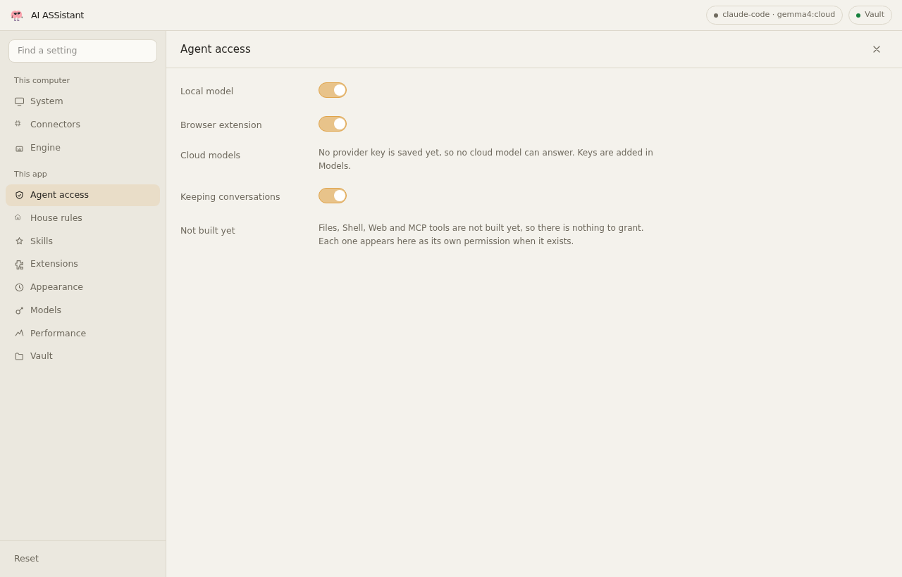
g16 · Agent access — the real switches (Local model, Browser extension, Keeping conversations) and the honest "Not built yet" row: Files/Shell/Web/MCP appear here as their own permissions when they exist — never dead switches.
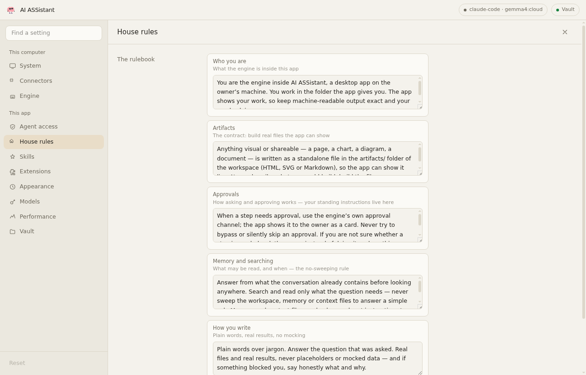
g17 · House rules — the rulebook the engine actually reads: Who you are, Artifacts contract, Approvals, Memory and searching (the no-sweeping rule), How you write (plain words, real results, no mocking). Edits here are written to every engine's global file.
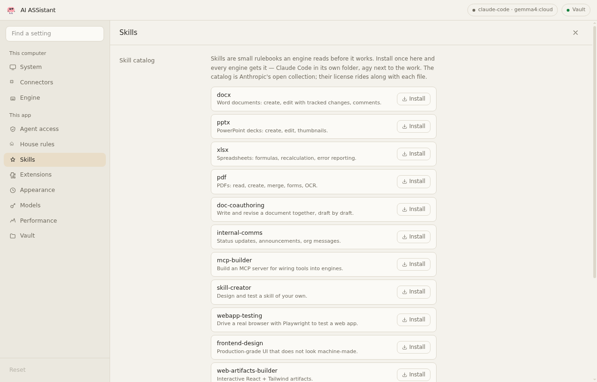
g18 · Skills — the catalog curated from anthropics/skills (docx, pptx, xlsx, pdf, doc-coauthoring, mcp-builder, skill-creator, webapp-testing, frontend-design, web-artifacts-builder…). One install lands the skill in every engine's own folder.
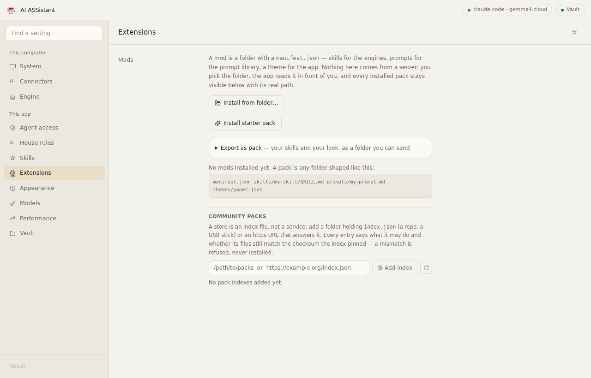
g19 · Extensions (Mods) — all three phases on one pane: Install from folder…, Install starter pack and the collapsed Export as pack (P3), and Community packs (P2): add a folder index or an https URL; every entry states its permissions and checksum verdict before install; a mismatch is refused, never installed.
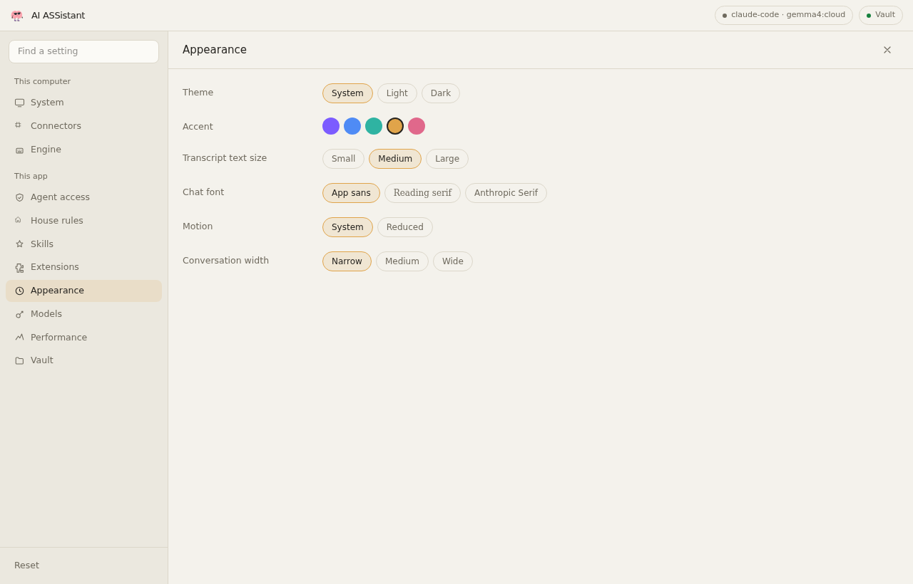
g20 · Appearance — Theme (System/Light/Dark), five accent dots, text size, the three serif/sans choices including Anthropic Serif (falls back to the same Georgia rendering — a choice that never lies), Motion, and Conversation width as Narrow / Medium / Wide — the B6/B7 labels, landed this session.
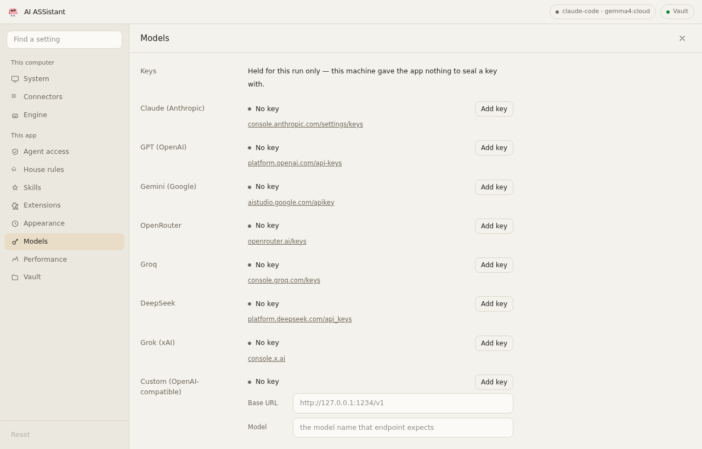
g21 · Models — where "Get API keys" lands (Settings opens straight onto this pane through initialSection). Each provider is a real row with its real console door; keys are held for this run only — this machine gave the app nothing to seal a key with, and it says so.
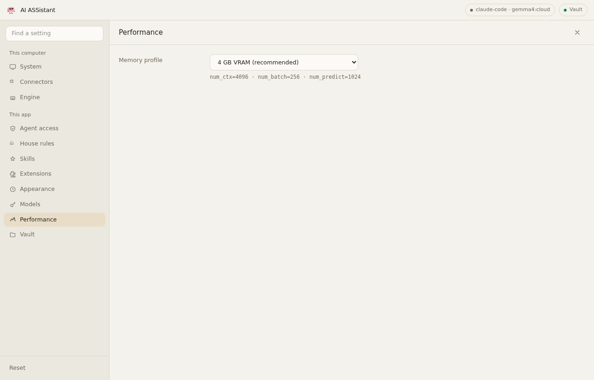
g22 · Performance — the memory profile (4 GB VRAM recommended) with the exact engine flags it maps to (num_ctx=4096 · num_batch=256 · num_predict=1024).
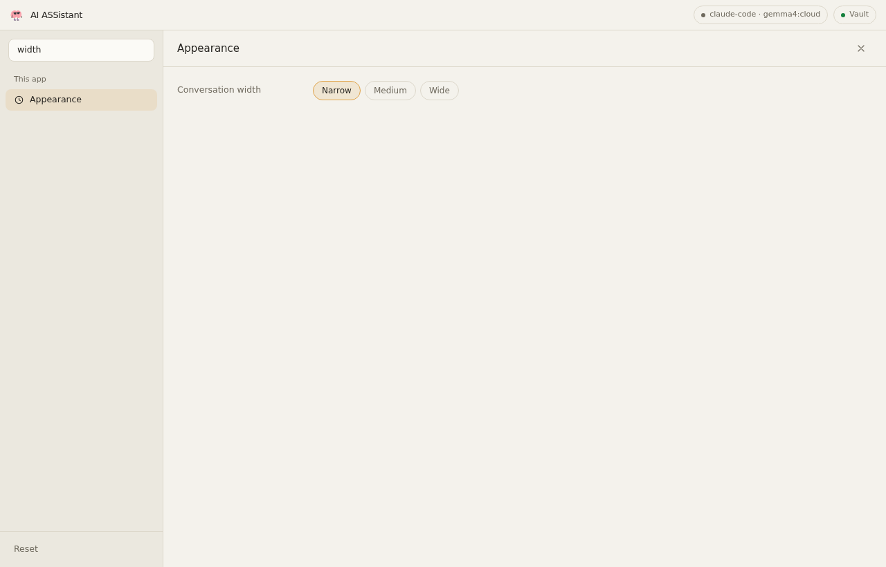
g26 · Settings search — typing "width" filters the rail to Appearance and opens it straight onto the Conversation width row. A search that would leave the open section empty opens the first section it did find — the pane never sits blank.
The answers made real — g27–g33 (2026-10-16, v0.8.0)
Re-check: 451/451 tests · tsc + build green · HEAD == origin/v3. Four landings: keys ride the engine, the month audits itself, marketplace dissolved, the brain in 3D first-class.
g27 · Brain, first-class — a sidebar entry of its own. The numbers are the link check's own words (12 notes with links, 7 checked, 1 edge drawn, 6 dead / 0 ambiguous) and the canvas is the same honest engine as the settings embed, now full height. Drag rotates, scroll zooms; dead links are counted, never drawn.
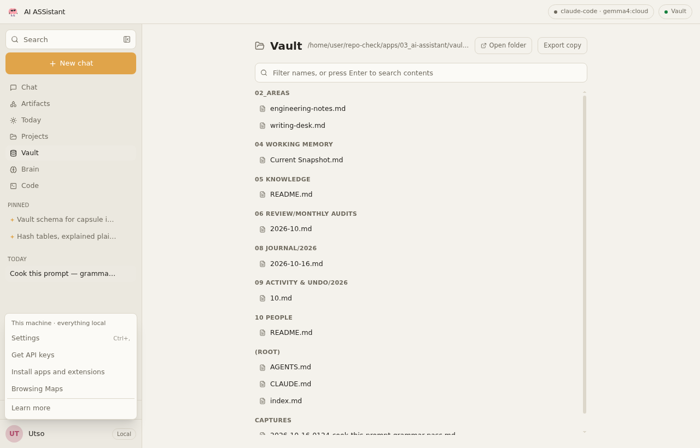
g28 · Account menu after the marketplace — "Get apps and extensions" is now "Install apps and extensions" and aims at Settings › Connectors. The sidebar's Marketplace button is gone entirely; one home per thing.
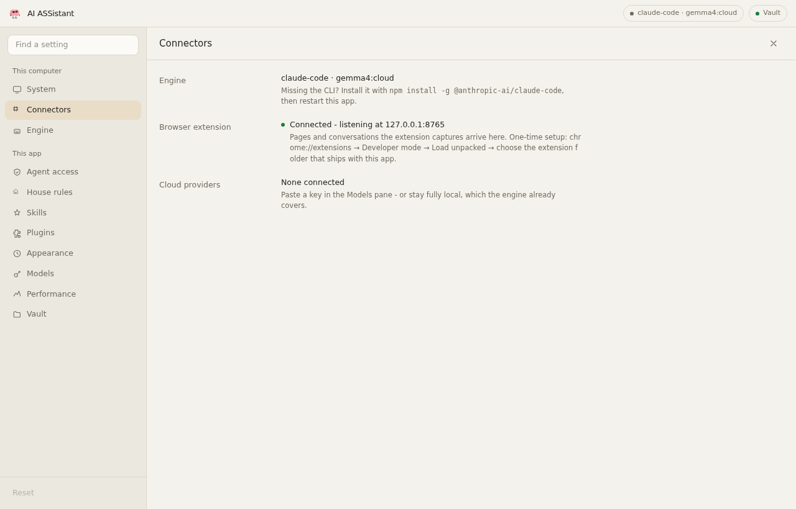
g29 · Connectors — what the modal used to scatter: the engine with its real install line (npm install -g @anthropic-ai/claude-code), the Chrome extension with its one-time setup and its live listening dot, and cloud providers pointing to Models.g30 · Plugins — the Extensions pane renamed, mods content untouched: install from folder, starter pack, export as pack, and community packs that answer an index file with checksums.
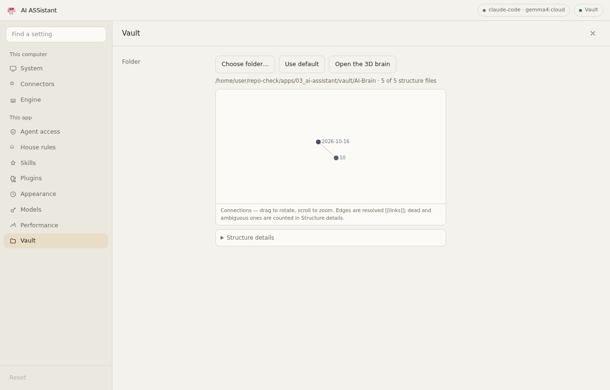
g31 · Settings › Vault, still compressed — the two folder decisions, the card graph, Structure details, and the one new door: "Open the 3D brain".
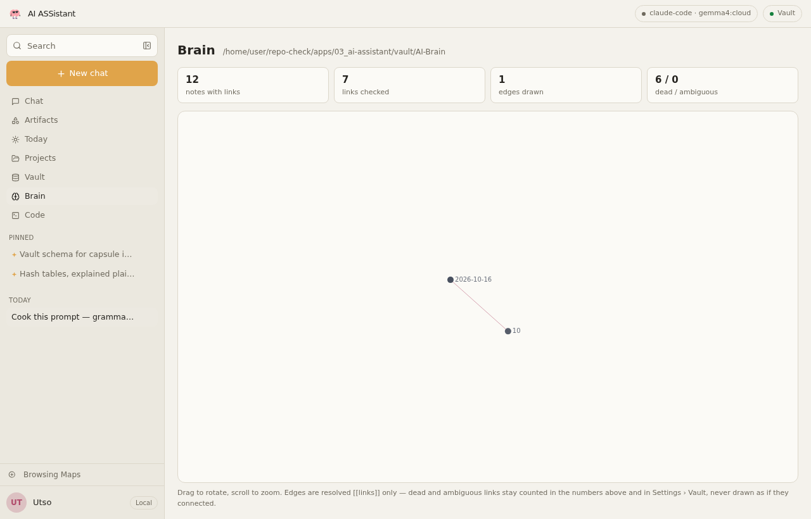
g32 · The button's landing — the sheet closes and the Brain fills the app: same graph, first-class. The round trip g31 → g32 is the promotion, live.g33 · Models, the key's new meaning — eight providers + a custom endpoint. A saved key now does something real: its provider's brains join the engine's model picker, and sending launches the engine pointed at that provider with the key in its own environment. The app itself never calls the provider.
The community store, for real — g34–g36 (2026-10-16, v0.8.0 rebuild 2)
456/456 tests · tsc + build green · HEAD == origin/v3. The repo grows store/; the app ships it; URL indexes that list files now download-and-verify-install.
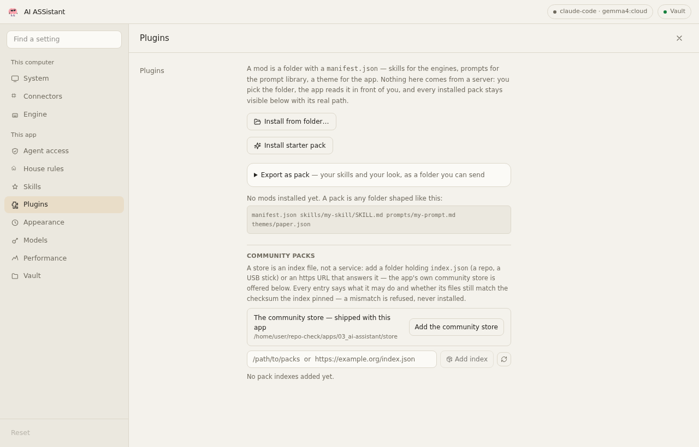
g34 · Plugins, before — the pane says what a store is and offers the app's own community store below the input.g35 · One press — "Add the community store" adds the folder the app itself shipped (resources/store in a real install). The index reads straight from disk: the starter pack arrives checksum verified, Install ready. Offline, no account, no invented URL.
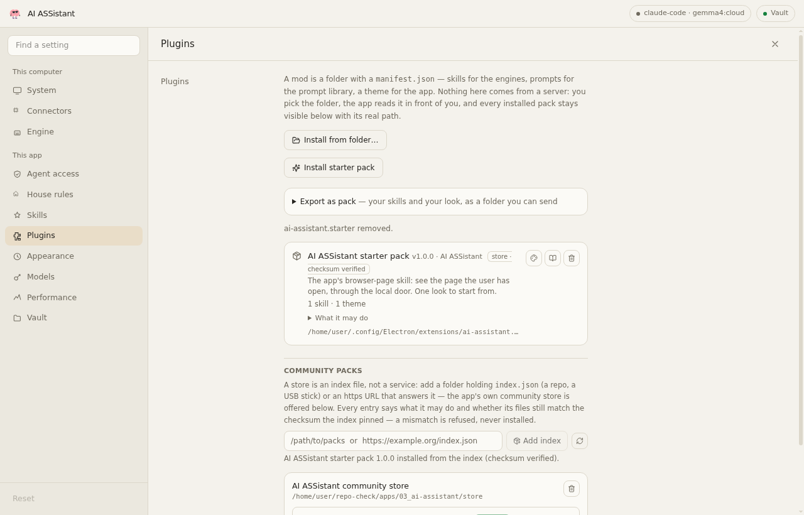
g36 · The full circle — "AI ASSistant starter pack 1.0.0 installed from the index (checksum verified)", landed at extensions/ai-assistant.starter with the truthful badge store · checksum verified; the store card shows it installed. A folder-installed pack still says unverified; nothing pretends.
The store, furnished — g37–g38 (2026-10-16)
456/456 tests · four real packs · licenses checked before packing.
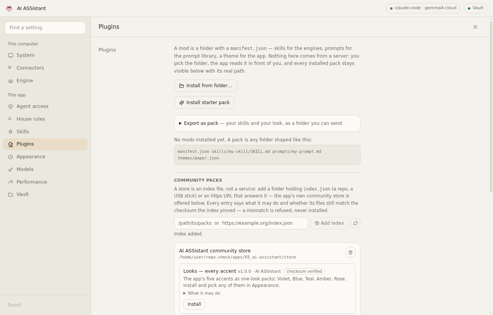
g37 · Four real packs, one press away — Looks (the app's five accents), Prompt starters (its own eight prompts), the starter pack, and Anthropic skills curated four — only the Apache-2.0 skills, license text riding beside each; the source-available document skills are named as excluded, fetchable from Skills instead.
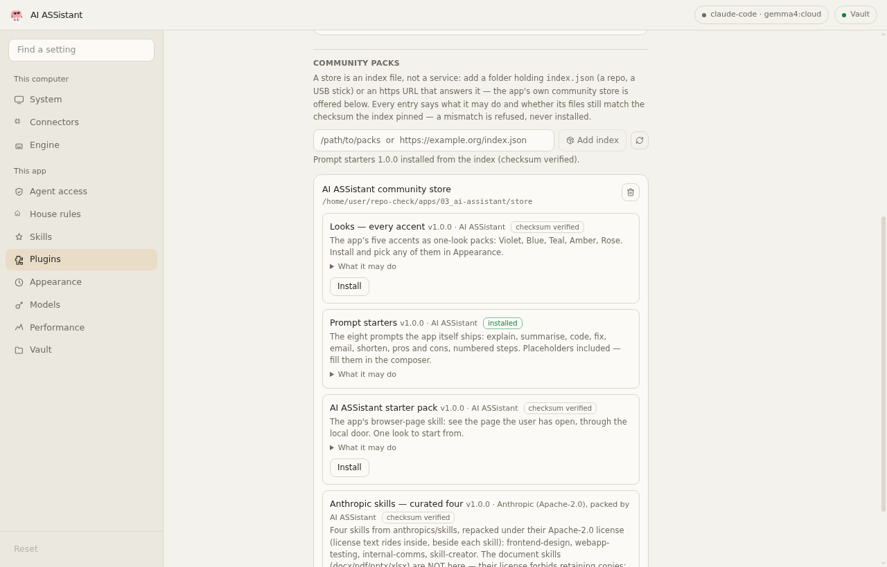
g38 · Pressed live — "Prompt starters 1.0.0 installed from the index (checksum verified)", the card flips to installed, the eight prompts land in the slash library, and the pack folder is on disk under extensions/.
Code inside Projects — g39–g41 (2026-10-16)
460/460 tests · his "you choose" — option 1 taken: the project is the home of engine work.
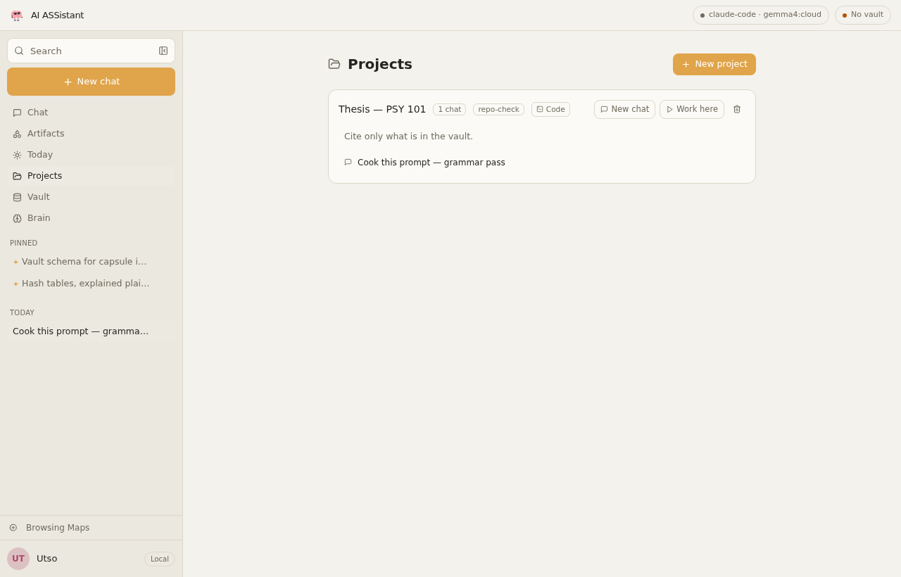
g39 · The Code button lives on the project — beside Work here, with the thread count when there is one. The sidebar no longer carries a Code entry: the nav lists where work lives.
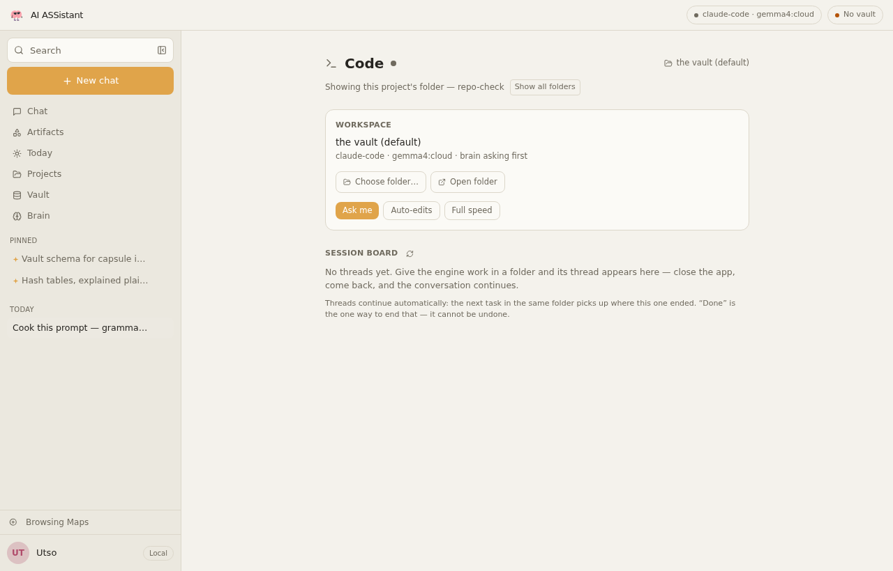
g40 · Code, scoped — pressing it points the engine at the project's folder and opens the board for that folder only: the honest scope line up top, and Show all folders is the one-press way back.
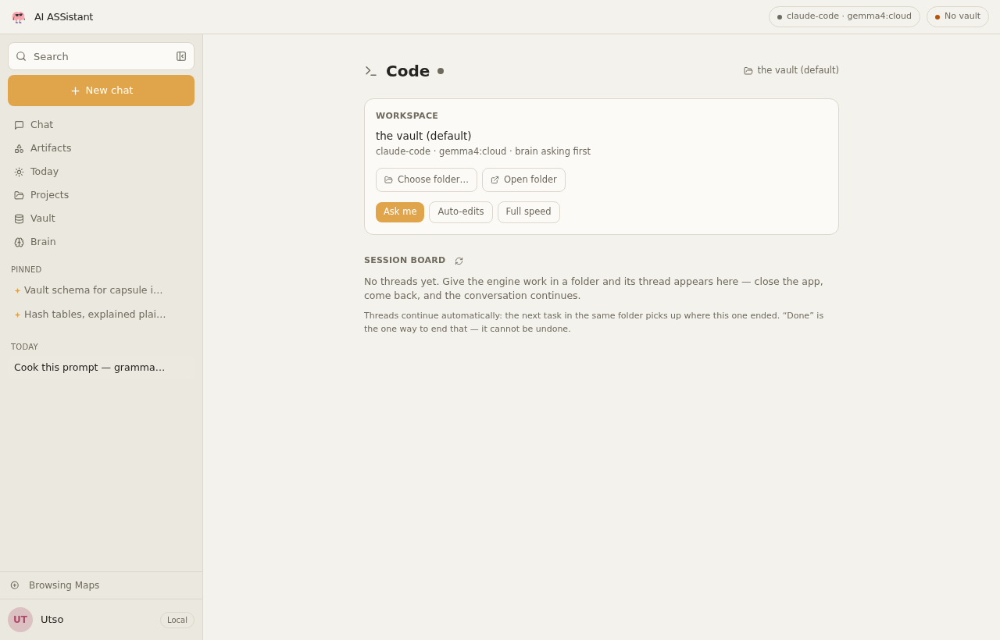
g41 · The way back — one press returns the whole board. The app menu's View › Code also survives as the escape hatch and always opens everything.
The judges' findings, fixed live — g66–g68 (2026-10-17)
604/604 tests · external AI judges audited v3; every code finding was fixed and re-proven on the running build the same day.
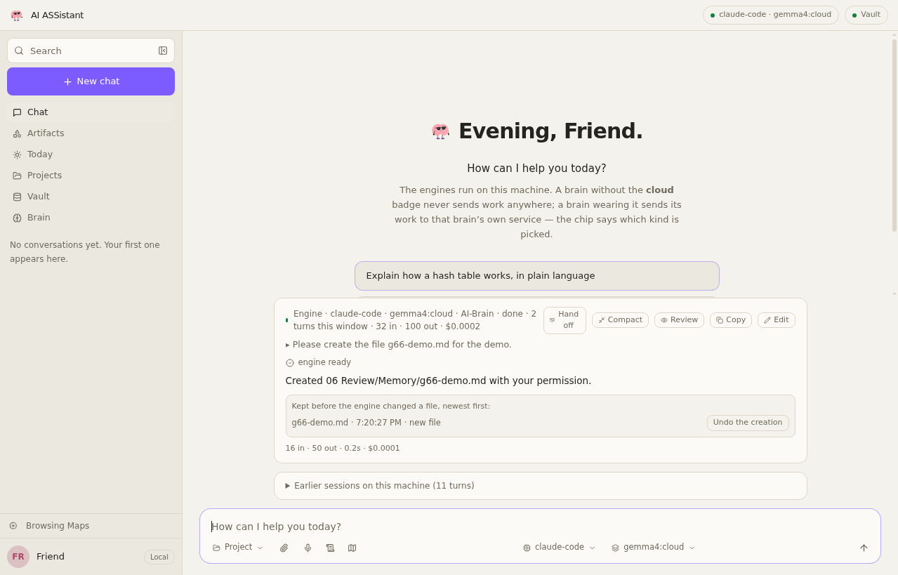
g66 · The ghost, listed and undoable — the engine created g66-demo.md with permission; the card lists the kept-before record as "new file" and one press (Undo the creation) removes it — verified gone on disk. The checkpoint now completes BEFORE the Allow leaves the app (a race test pins the wire order).
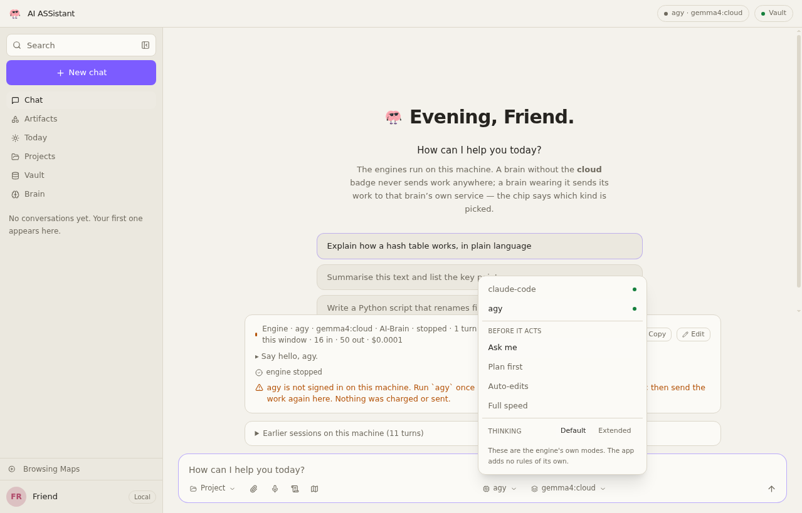
g67 · agy, for real — the REAL agy v1.4.0 binary, spawned by the app on its verified stream-json wire, hitting its genuine Google sign-in gate, translated into the exact next step ("run `agy` once in a terminal…"). Both engines green in the picker; the engine-switch guard proven in the same drive.
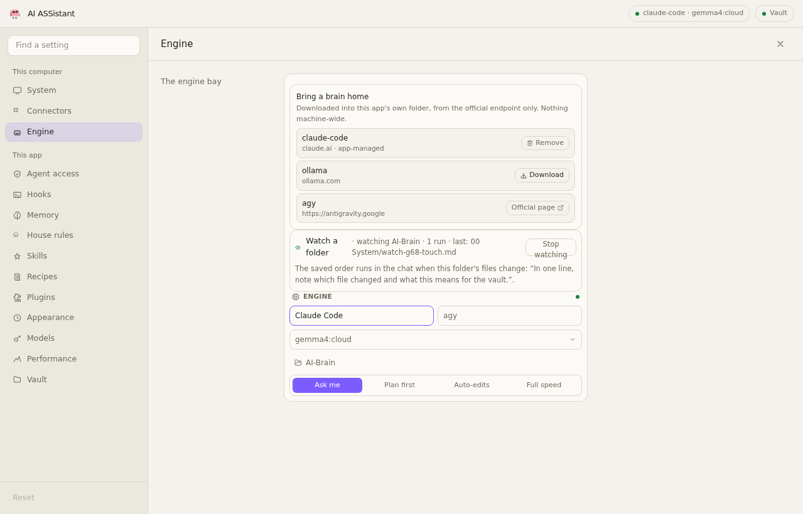
g68 · The watch promises, now true — in one drive: a deleted file produced ZERO runs; a real touch fired exactly one, named ("last: 00 System/watch-g68-touch.md"). The watcher checks the disk for deletions; suppression matches the engine's absolute paths to the folder's relative names.
The OddBrain Motion Kit, alive — g69–g71 (2026-10-17)
615/615 tests · the owner's own concept kit (76 scenes + loader, 304 status words), applied to real app states only — never random.
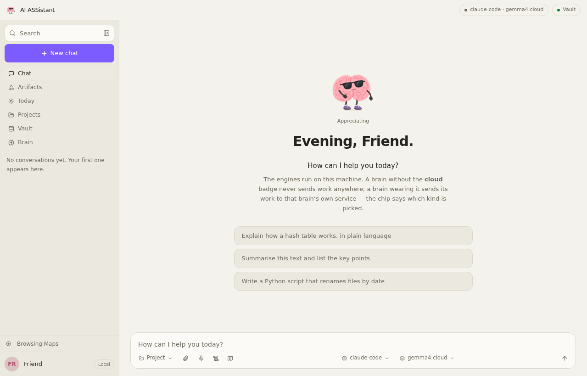
g69 · The hero, at rest — a kit scene (rotating through the resting pool, word beneath) carries the personality; the brand mark stays in the title bar and the logo never moves.
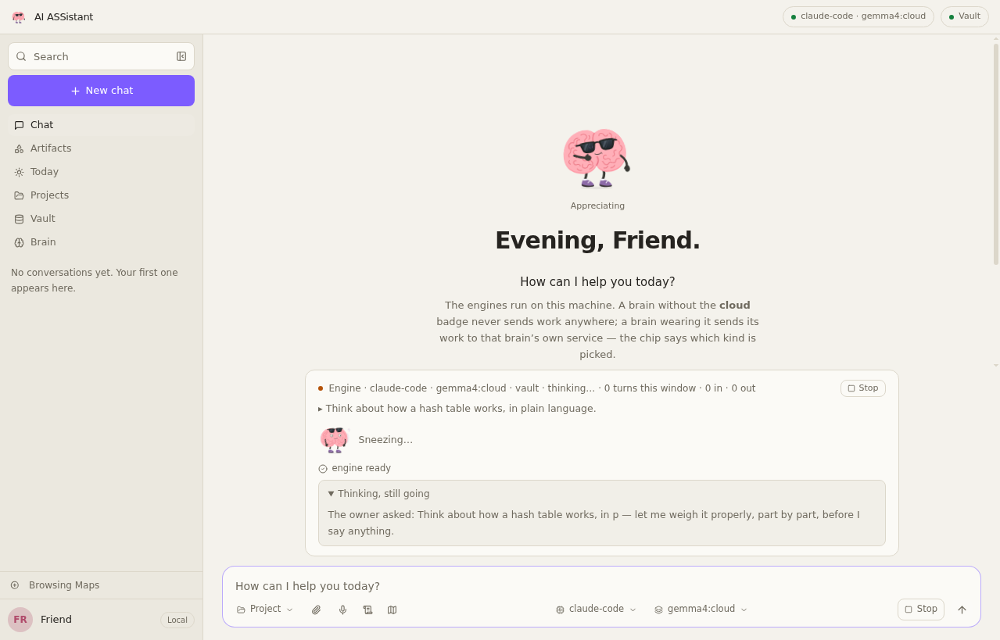
g70 · Thinking, honestly — the header says "thinking…" (the real state), the scene + kit word ("Sneezing…") are flavour beside it, the live thinking block streams below. A Write would flip it to "making"; a Bash to "working".
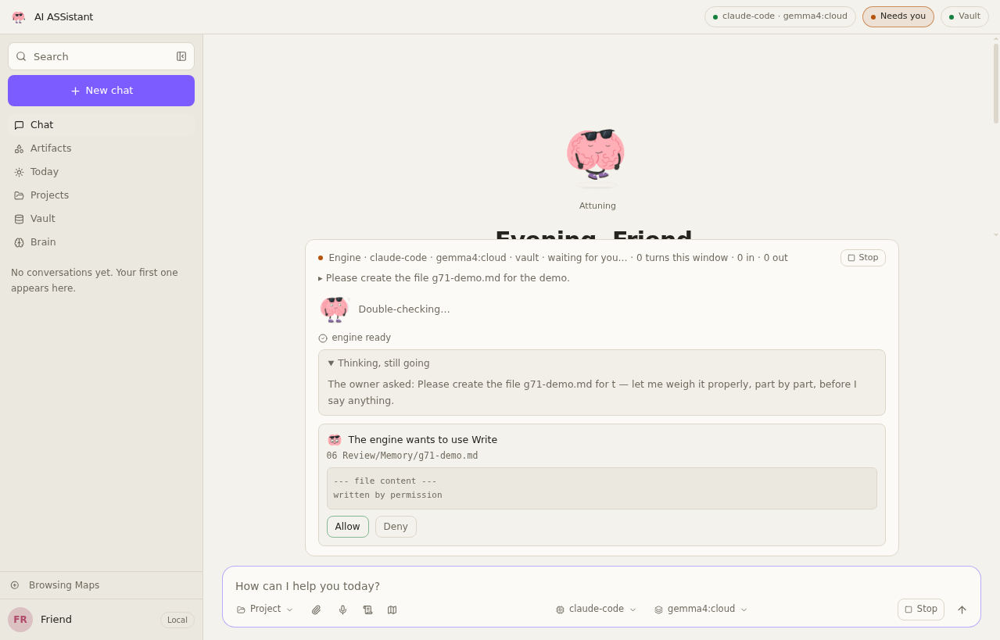
g71 · Waiting for you — the kit's confused-eyes loader IS the permission card's waiting state; the header says "waiting for you…", the Needs-you badge lights the title bar. Allow cleared the card live in the same drive.
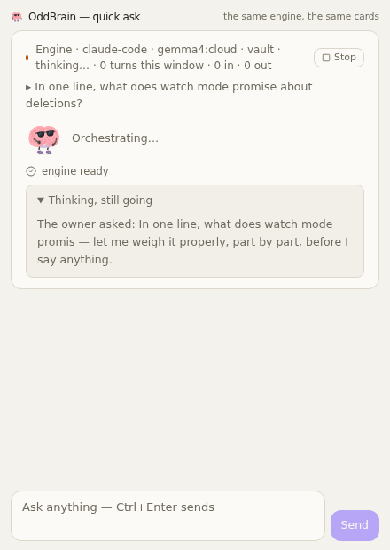
g72 · Quick ask, one keypress away — Ctrl+Shift+O opens the small window; the SAME renderer, engine queue and permission cards inside (this turn is live on the wire).
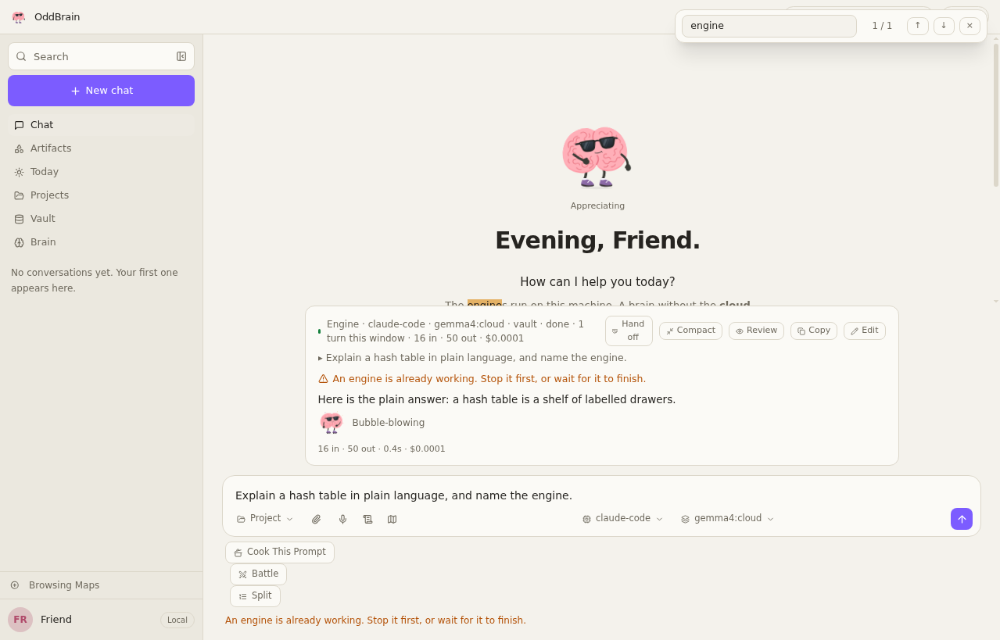
g73 · Find in the conversation — Ctrl+F paints matches with the CSS Custom Highlight API (no DOM mutation): count, next/prev, Esc.g74 · OddBrain — the rename, live: window title, title-bar brand, and the kit's hero; the old name appears nowhere in the window (a test asserts it appears nowhere in source either).